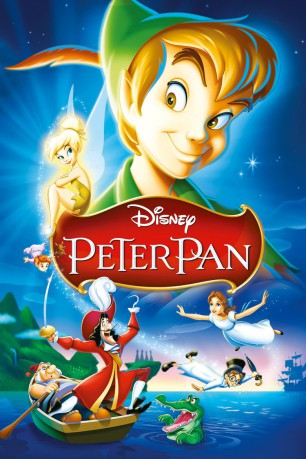

#1040 Peter Pan
 gesehen am 20.05.2015
gesehen am 20.05.2015
 
 IMDB-Wertung: 7.3 / 10
IMDB-Wertung: 7.3 / 10  Metascore: 0
Metascore: 0 
Peter Pan, der Junge der niemals erwachsen wird, nimmt Wendy und ihre beiden Brüder mit auf eine fantastische Reise ins Nimmerland. Sie tauchen ein in die Welt der Träume, treffen auf wilde Indianer und bezaubernde Meerjungfrauen. Doch das größte Abenteuer steht ihnen noch bevor, wenn Peter Pan und Naseweis, die zauberhafteste Fee der Filmgeschichte, gegen Käpt’n Hook und seine räuberischen Piraten antreten.
Jahr: 1953
Dauer: 77 Minuten
FSK: 0
Land: USA Studio: RKO Radio PicturesTonspuren: DTS - ,
Untertitel:
Auflösung: 1080p (1424x1080) Größe: 3328 MB
Genre: Animation/Trick, Abenteuer, Familie, Fantasy, Musical
Regisseur: Clyde Geronimi, Wilfred Jackson, Hamilton Luske, Jack Kinney
Drehbuch: J.M. Barrie, Ted Sears, Erdman Penner, Bill Peet, Winston Hibler
Soundtrack: Oliver Wallace
Darsteller:
- Bobby Driscoll als Peter Pan
 Kathryn Beaumont als Wendy Darling
Kathryn Beaumont als Wendy Darling Hans Conried als Captain Hook / Mr. Darling
Hans Conried als Captain Hook / Mr. Darling- Heather Angel als Mrs. Darling
 Paul Collins als John Darling
Paul Collins als John Darling- Tom Conway als Narrator
 June Foray als Mermaid / Squaw , uncredited
June Foray als Mermaid / Squaw , uncredited- Bill Thompson als Mr. Smee / Pirates
- Tommy Luske als Michael Darling
- Candy Candido als Indian Chief
- Tony Butala als Lost Boy , uncredited
- Carol Coombs als , uncredited
- Robert Ellis als Lost Boy , uncredited
- Connie Hilton als Mermaid , uncredited
- Margaret Kerry als Mermaid , uncredited
- Karen Kester als , uncredited
- Johnny McGovern als Lost Boy , uncredited
- Norma Jean Nilsson als , uncredited
- Thurl Ravenscroft als Chorus Singer , singing voice, uncredited
- Jeffrey Silver als Lost Boy , uncredited
- Stuffy Singer als Lost Boy , uncredited
- Anne Whitfield als , uncredited
Datei: X:\Kinder Disney HD\Peter Pan\Peter Pan (1953, FSKo.Al., 1424x1080).mkv seit 15.05.2015
Festplatte: Kinder-Filme+Trick
 Alle Filme aus Gruppe 'Kinder Disney HD\Peter Pan'
Alle Filme aus Gruppe 'Kinder Disney HD\Peter Pan'